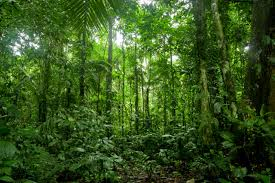
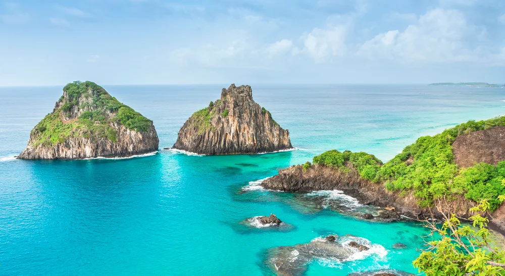
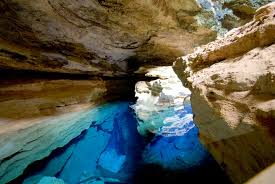
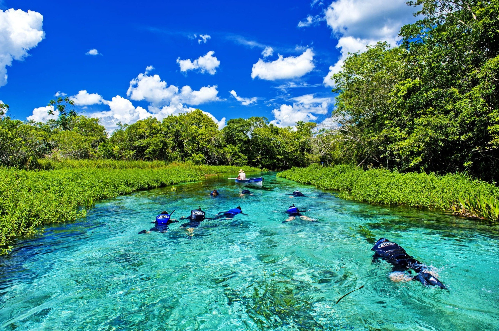

Rio de Janeiro
Rio de Janeiro é uma cidade litorânea localizada no estado do Rio de Janeiro, no Brasil.

Ouro Preto
Ouro Preto é uma cidade histórica localizada no estado de Minas Gerais, no Brasil.

Cataratas do Iguaçu
As Cataratas do Iguaçu impressionam com suas gigantescas quedas d'água, natureza exuberante e paisagens deslumbrantes.

Floresta Amazônica
A Floresta Amazônica é um vasto bioma tropical, rica em biodiversidade, abrigando milhares de espécies e influenciando o clima global.
Brasília
Brasília, capital do Brasil, destaca-se por sua arquitetura moderna, planejamento urbano inovador e obras de Oscar Niemeyer, símbolo do progresso.

Fernando de Noronha
Fernando de Noronha é um arquipélago paradisíaco, famoso por suas praias de águas cristalinas, rica vida marinha e paisagens preservadas.
Salvador
Salvador, capital da Bahia, encanta com seu patrimônio histórico, cultura afro-brasileira vibrante, culinária marcante e o famoso Carnaval.

Chapada Diamantina
A Chapada Diamantina é um parque nacional com cachoeiras impressionantes, grutas fascinantes, trilhas desafiadoras e paisagens de tirar o fôlego no coração da Bahia.
Bonito
Bonito, no Mato Grosso do Sul, é famoso por suas águas cristalinas, cavernas submersas, rios repletos de peixes e ecoturismo sustentável.
Lençóis Maranhenses
Os Lençóis Maranhenses são um deserto de dunas brancas com lagoas cristalinas, criando um cenário único e impressionante no litoral do Maranhão.